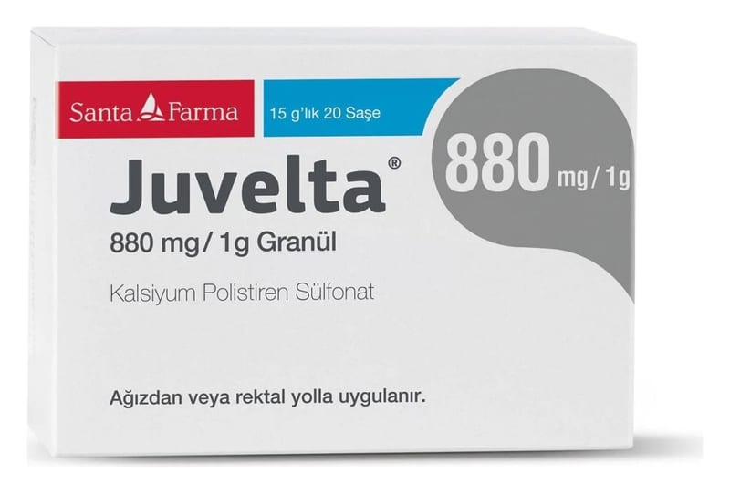

Juvelta 880 mg/1 g Granül, 120 Saşe

Ne için kullanılır
KT · Bölüm 1JUVELTA®granül formunda, kanda potasyum yüksekliğini tedavi edici ilaçlar grubuna ait tıbbi bir üründür. JUVELTA®, kalsiyum polistiren sülfonat içermektedir. Her biri 15gram JUVELTA®içeren saşelerde 20, 60 ve 120 saşelik kutularda kullanıma sunulmaktadır. Ka ndaki potasyum yüksekliğinin tedavisinde kullanılır: Böbrek yetmezliği olan diyaliz h astalarında, diyaliz seansları arasında serum potasyum yüksekliğinin t edavisi ve önlenmesi, Potasyum zehirlenmesinin tedavisi